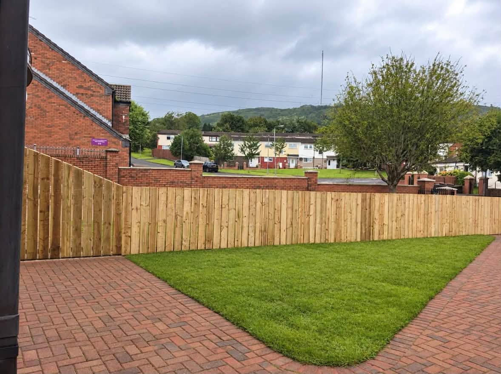
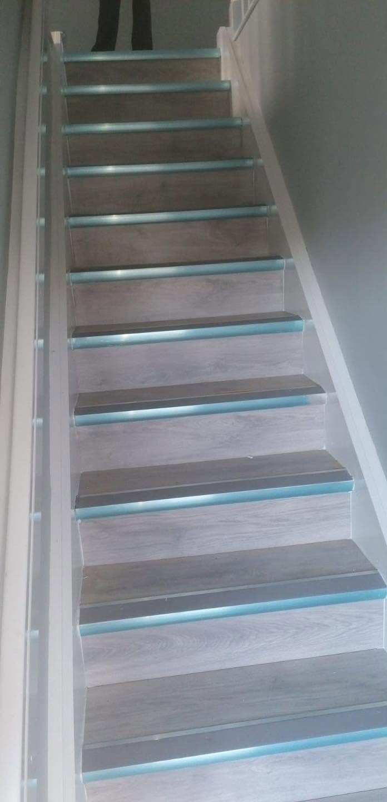
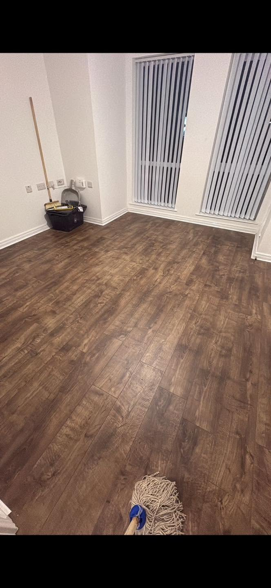
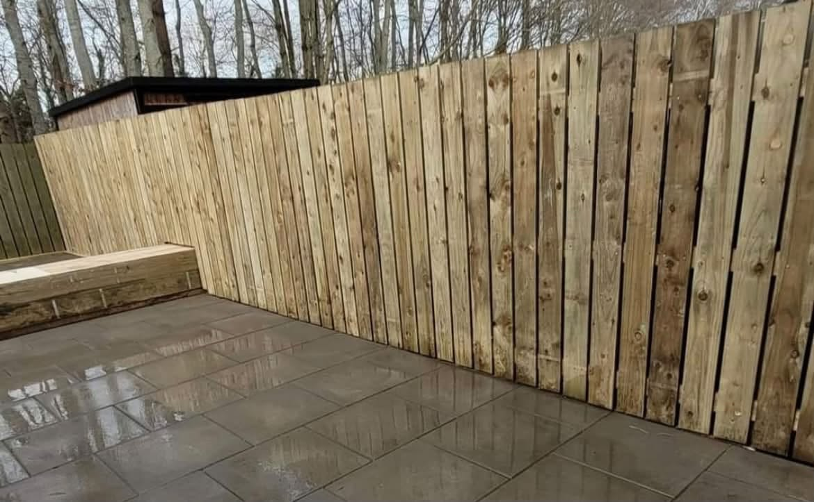
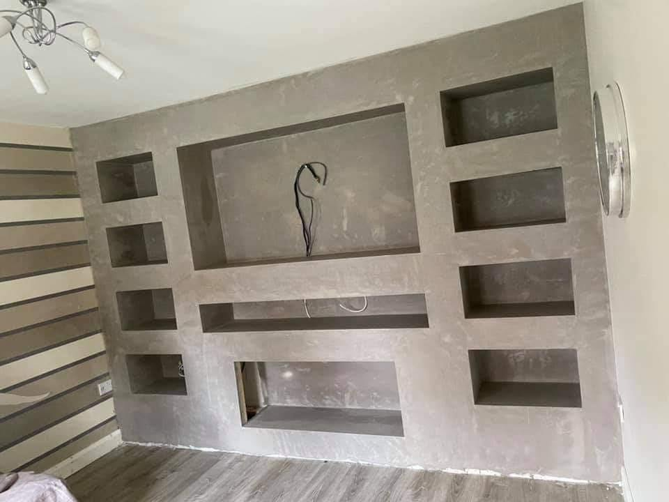
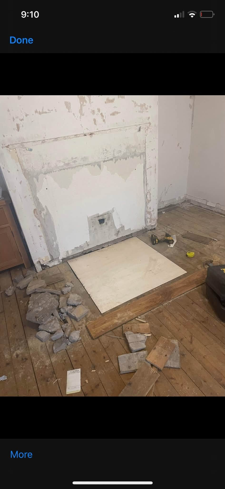
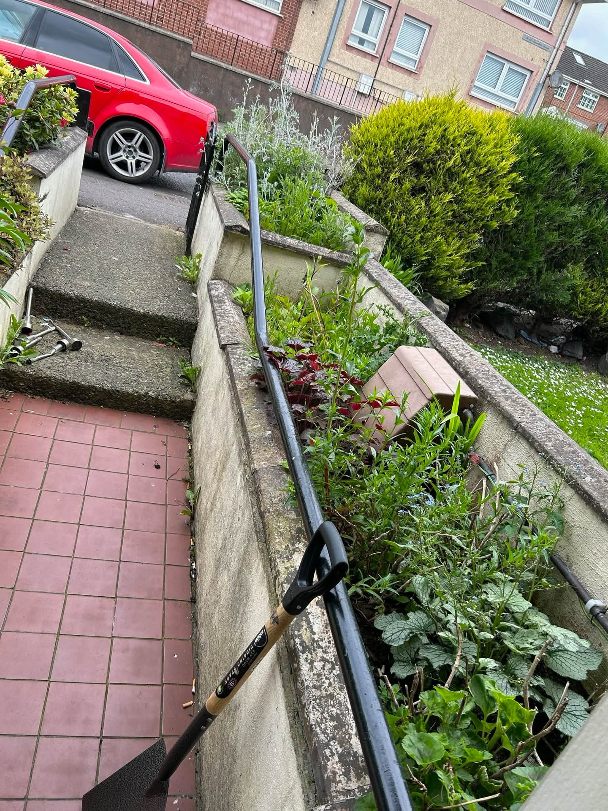
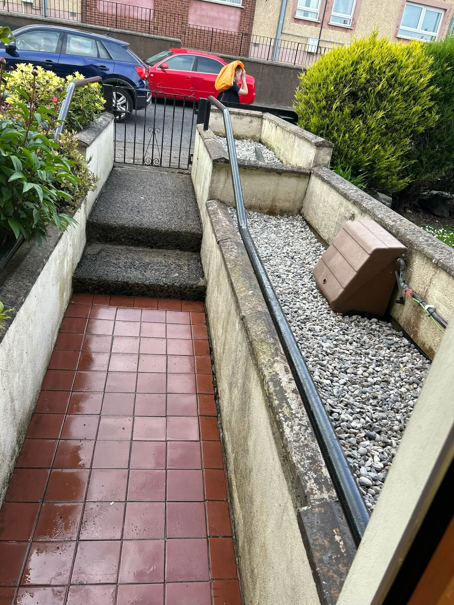

Joinery & CarpentryPractical and bespoke timber work

BELFAST · JOINERY & PROPERTY MAINTENANCE
Quality work.
Built to last.
Joinery, doors, flooring, fencing, decking and practical repairs for the places you live in every day.
JoineryDoors & FramingFencing & DeckingProperty Maintenance
Doors & FramingSupply, fitting and repairs
Fencing & DeckingOutdoor timber work made to last
Property MaintenanceRepairs inside and outside the home
QUALITY WORK. RELIABLE SERVICE.
Good joinery starts with the details.
KMS handles the useful work that makes a property feel finished: fitted doors, frames, flooring, interior features and well-built outdoor timber structures.
Request a quote →

OUTDOOR JOINERY
Made for the way you use your garden.
From secure fencing to a finished patio edge and outdoor structure, KMS's supplied project photos show a practical approach to the outside of a home.
See the work →
REAL KMS WORK
A closer look at the finish.
Photos supplied for KMS Joinery & Property Maintenance. Each image belongs to a job or stage of work, with no invented before-and-after claims.


PROJECT PROGRESS
Outdoor work from start to finish.
The supplied images show the steps and garden path at two stages of the work. It is the sort of job where preparation and neat finishing both matter.
Discuss your project →

KMS JOINERY & PROPERTY MAINTENANCE
One contact for the jobs that make a difference.
Doors, frames, floors, fencing, decking and general repairs all benefit from careful measurement and a tidy finish. Tell KMS what needs doing and get a free quote.
01
Joinery
Timber work, doors, frames and interior finishes.
02
Outdoor work
Fencing, decking and practical garden timberwork.
03
Property upkeep
Repairs and improvements, inside and out.
REQUEST A FREE QUOTE
Tell KMS what needs doing.
Fill in your details and WhatsApp will open with the message ready to send. This is a quote request, not a confirmed booking.
KMS JOINERY & PROPERTY MAINTENANCE
Ready to get your project moving?
Belfast and nearby areas · Call or WhatsApp for a free quote.